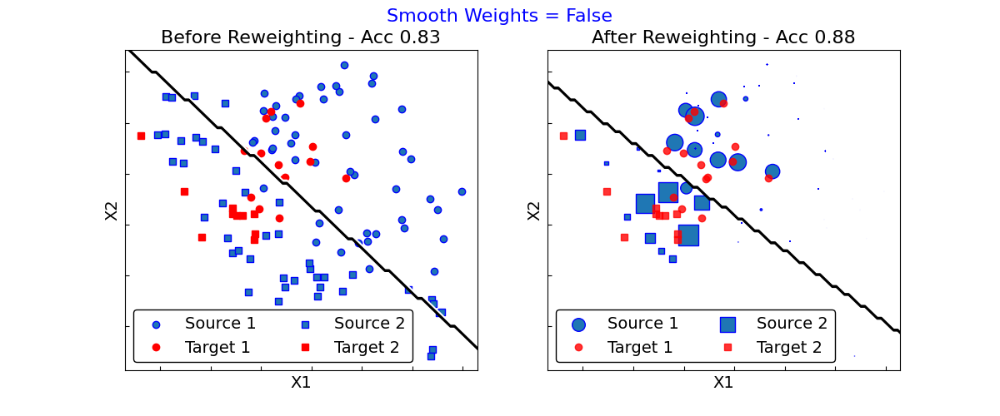
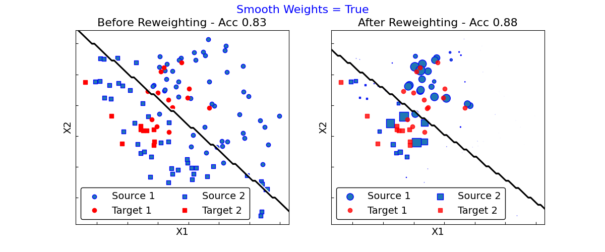

Note
Go to the end to download the full example code
Kernel Mean Matching
This example illustrates the use of KMM method [1] to correct covariate-shift.
# Author: Antoine de Mathelin
#
# License: BSD 3-Clause
# sphinx_gallery_thumbnail_number = 1
import matplotlib.pyplot as plt
from matplotlib.colors import ListedColormap
from sklearn.linear_model import LogisticRegression
from sklearn.inspection import DecisionBoundaryDisplay
from skada import KMM
from skada.datasets import make_shifted_datasets
Generate sample bias dataset
ds = make_shifted_datasets(
n_samples_source=12,
n_samples_target=3,
shift="covariate_shift",
label="binary",
noise=0.4,
random_state=123,
return_dataset=True
)
X, y, sample_domain = ds.pack_train(as_sources=['s'], as_targets=['t'])
Xs, ys = ds.get_domain("s")
Xt, yt = ds.get_domain("t")
Illustration of Importance Weighting
for smooth in [False, True]:
fig, (ax1, ax2) = plt.subplots(1, 2, figsize=(12, 5))
cm = ListedColormap(["w", "k"])
base_estimator = LogisticRegression().set_fit_request(sample_weight=True)
kmm = KMM(base_estimator, gamma=10., max_iter=1000,
smooth_weights=smooth)
kmm.fit(X, y, sample_domain=sample_domain)
weights = kmm[0].transform(X, sample_domain=sample_domain,
allow_source=True)
weights = weights["sample_weight"]
src_weights = weights[sample_domain == 1]
src_weights /= src_weights.mean()
src_weights *= 30.
base_estimator.fit(Xs, ys)
acc = base_estimator.score(Xt, yt)
ax1.scatter(Xs[ys == 0, 0], Xs[ys == 0, 1],
color="C0", label="Source 1", edgecolor="b")
ax1.plot(Xt[yt == 0, 0], Xt[yt == 0, 1], "o", c="r", label="Target 1")
ax1.scatter(Xs[ys == 1, 0], Xs[ys == 1, 1],
color="C0", marker="s", label="Source 2", edgecolor="b")
ax1.plot(Xt[yt == 1, 0], Xt[yt == 1, 1], "s", c="r", label="Target 2")
xlim = ax1.get_xlim()
ylim = ax1.get_ylim()
DecisionBoundaryDisplay.from_estimator(
base_estimator, Xs,
plot_method='contour', response_method="predict", cmap=cm, ax=ax1
)
ax1.set_xlim(xlim)
ax1.set_ylim(ylim)
ax1.set_title("Before Reweighting - Acc %.2f" % acc, fontsize=16)
ax1.set_xlabel("X1", fontsize=14)
ax1.set_ylabel("X2", fontsize=14)
ax1.legend(loc="lower left", fontsize=14, ncol=2,
framealpha=True, edgecolor="k")
acc = kmm.score(Xt, yt)
ax2.scatter(Xs[ys == 0, 0], Xs[ys == 0, 1], s=src_weights[ys == 0],
color="C0", label="Source 1", edgecolor="b")
ax2.plot(Xt[yt == 0, 0], Xt[yt == 0, 1], "o", c="r", alpha=0.8, label="Target 1")
ax2.scatter(Xs[ys == 1, 0], Xs[ys == 1, 1], s=src_weights[ys == 1],
color="C0", marker="s", label="Source 2", edgecolor="b")
ax2.plot(Xt[yt == 1, 0], Xt[yt == 1, 1], "s", c="r", alpha=0.8, label="Target 2")
xlim = ax2.get_xlim()
ylim = ax2.get_ylim()
DecisionBoundaryDisplay.from_estimator(
kmm[1].base_estimator_, Xs,
plot_method='contour', response_method="predict", cmap=cm, ax=ax2
)
ax2.set_xlim(xlim)
ax2.set_ylim(ylim)
ax2.set_title("After Reweighting - Acc %.2f" % acc, fontsize=16)
ax2.set_xlabel("X1", fontsize=14)
ax2.set_ylabel("X2", fontsize=14)
ax2.legend(loc="lower left", fontsize=14, ncol=2,
framealpha=True, edgecolor="k")
ax1.tick_params(direction="in", labelleft=False, labelbottom=False)
ax2.tick_params(direction="in", labelleft=False, labelbottom=False)
plt.suptitle("Smooth Weights = %s" % str(smooth), fontsize=16, color="b")
plt.show()
- 
- 
Total running time of the script: (0 minutes 0.861 seconds)